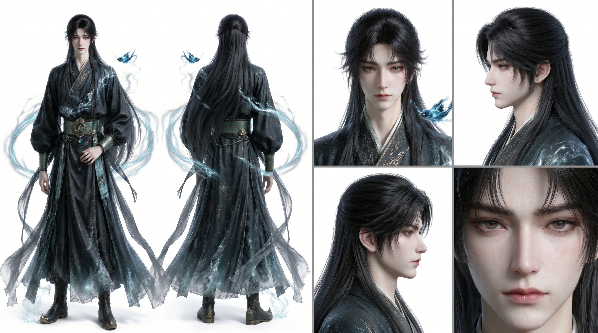
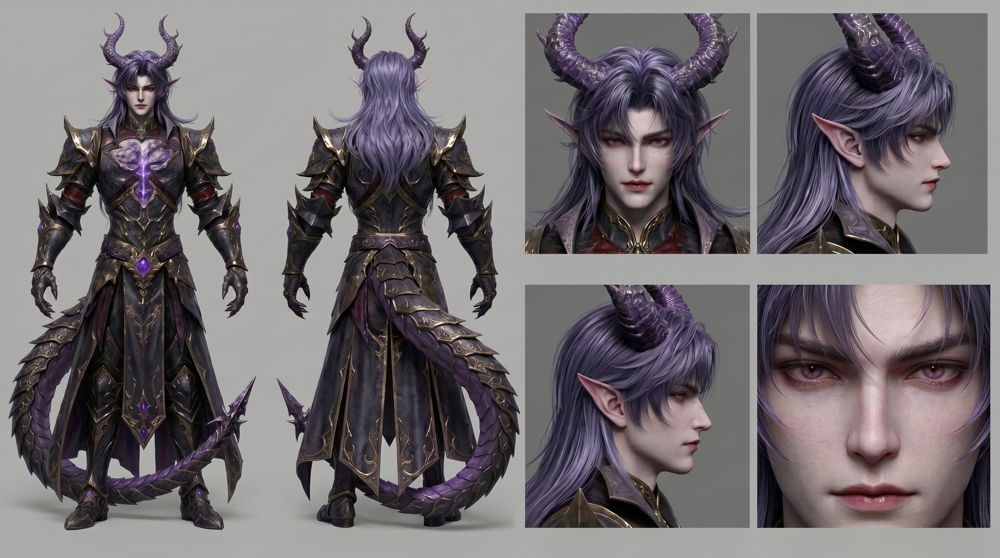
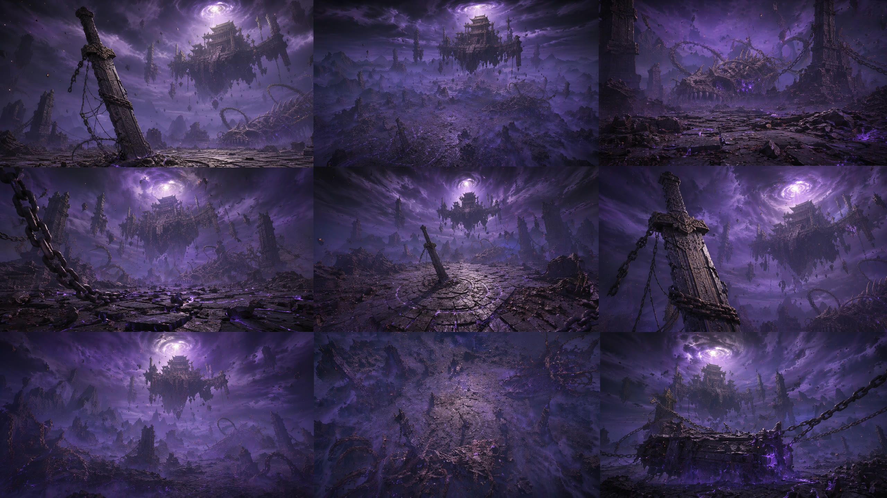
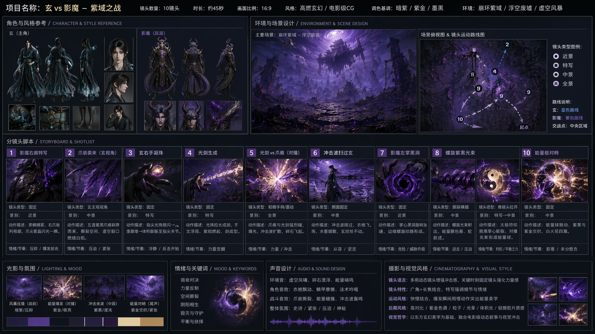
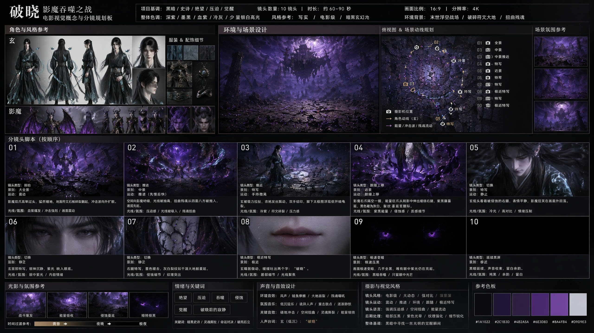
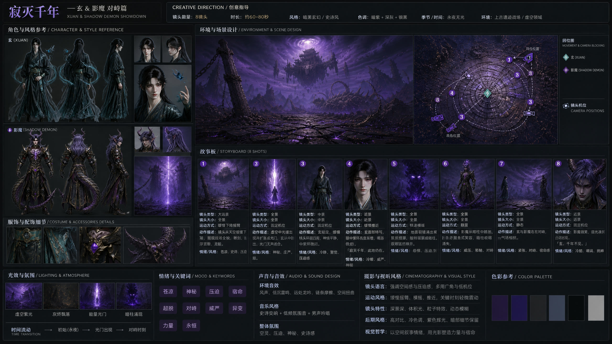
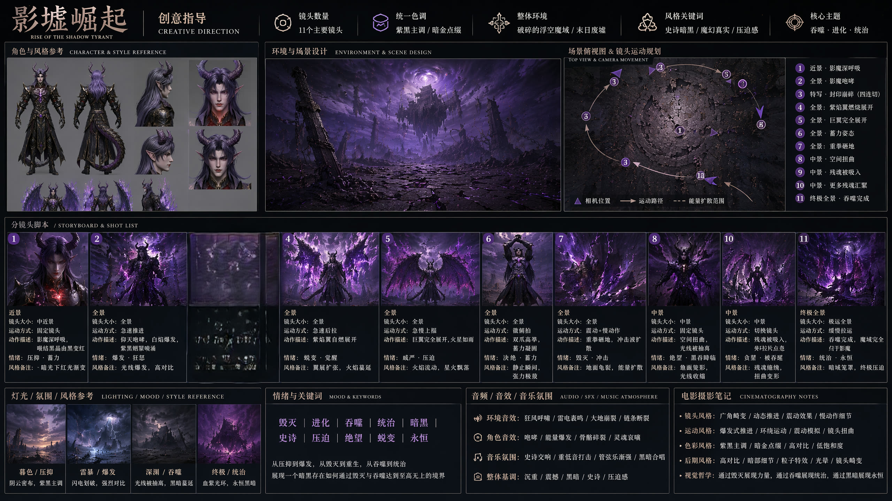

一部AI全链路创作的东方玄幻特效短片
从混沌到光芒，一个守护者的千年封印与觉醒
从赛博朋克到东方玄幻的转向，主角"玄"历经青 → 紫金 → 墨绿蓝水三代配色迭代，最终找到与角色气质真正匹配的视觉语言。灵感来自修仙境界突破叙事、高饱和短视频美学，以及AI创作中的意外之美。



项目核心定位为"炫酷AI特效短片"。最初碰撞了多个方向——赛博觉醒时空穿越数字分身梦境入侵——最终锁定东方玄幻修仙。选择理由很明确：赛博朋克、霓虹故障风格的AI视频已大量存在，而修仙题材中的能量爆发、法术对轰、色彩爆炸，天然适合展示AI特效的表现力。
第一版方案曾尝试融入"赛博故障艺术"——反派以霓虹几何色块和数字乱码形态出现。但在效果验证后，这个方向被果断放弃。不是因为技术无法实现，而是审美逻辑不成立——修仙世界的力量体系是"气"的流动，赛博元素是"电"的脉冲，两者在本质上无法融合。最终反派被重新设计为纯粹的"魔气实体"：紫黑能量构成的身躯、虚空裂痕般的纹路、被封印锁链缠绕的魔角，完全回归东方玄幻语境。
这是整个项目最核心的设计过程：
第一版·青色青玉肩甲、翡翠质感皮肤、青色光剑。问题：青色在暗调基底上容易显脏，质感控制不好呈现廉价塑料感。
第二版·紫金紫玉发簪、紫水晶肩甲、紫金光芒。理论成立，但过于威严——将主角推向了"神"的一端，与他作为千年封印守护者的沉静气质略有偏差。
第三版·墨绿蓝水 最终采用墨绿色长袍下摆泛白，身上流淌蓝色水流纹样，肩膀悬浮阴阳鱼。墨绿是墨色的延伸，保持与"水墨"基因的连接；蓝水流是灵气的可视化；阴阳鱼是道家最核心的符号。这套配色让主角的气质回归"道法自然"——沉静、深厚、但不可测。
其一，修仙"境界突破"叙事。全片结构——封印→觉醒→爆发→净化——本质是一个浓缩的修仙弧线。每一次色彩变化对应一次力量层级的提升，观众通过颜色就能理解主角处于哪个阶段。
其二，高饱和色彩冲击的短视频美学。15秒强冲击的需求，要求每一帧都具备截图级表现力。主角的"静"与特效的"动"形成互补，沉静配色反而增强了爆发段落的冲击力。
其三，AI生成的"意外之美"。残魂的扭曲形态、光粒的飞舞轨迹、紫焰的流动纹理——这些细节不做过度的预设，信任AI在参数范围内产出的惊喜。
全链路AI协作：DeepSeek（创意引擎）→ GPT Image + Banana 2（图像生成）→ 如意SD2.0（视频生成）→ 如意/Minimax（音效生成），每个工具承担明确且互补的角色。
承担整个项目的创意发动机角色。在多轮对话中完成了：方向定位从模糊的"炫酷特效"锁定东方玄幻修仙、世界观搭建角色/场景/色彩体系、剧本编写2分钟完整剧本/四幕结构、分镜拆解41个镜头的飞书表格、提示词编写角色/场景/武器/特效的详细生成提示词。
最大价值在于快速响应迭代需求的能力——"绿色有点丑"立即给出替代方案；"赛博朋克突兀"将全部视觉元素翻译为纯东方玄幻语境；"分镜再细化一点"把2秒镜头拆成4个0.5秒子镜头。这种创意敏捷性，是传统编剧流程无法比拟的。
用于快速概念验证和风格探索。在项目初期快速生成不同配色方案、不同设计方向的概念图，用于对比和筛选。优势在于迭代速度快，可在一轮对话中同时生成多个版本进行比较。主角从青色到紫金到最终墨绿蓝水的多轮配色尝试，都是通过GPT Image快速跑通再做出决策。
用于最终成品的精细图像生成。优势在于对提示词的还原度更高，特别是在材质描述方面。主角身上蓝色水流——那种在衣袍表面流动、既不是印花也不是刺绣、而是灵动的能量纹路——需要通过精确的材质描述才能呈现。
场景采用多视角策略（正面/侧面/俯视/反面），每个视角单独出图，确保后续动态化时空间关系的一致性。
承担将静态概念图转化为动态视频的关键角色：
特效动态化紫金光束射出、紫焰翅膀展开、冲击波扩散、残魂飘飞——关键参数包括运动速度（0.8倍/0.5倍慢动作）、运动方向（中心向外扩散/地面向上飞升）、色彩过渡的渐变过程。
角色动态主角身上蓝色水流的流动是本片最精妙的动态细节——水流需在衣袍表面持续流淌，跟随角色动作产生波动，但又不能与衣料褶皱冲突。通过描述"水流沿衣袍褶皱方向流动""流速与角色动作幅度呈正比"实现。
空间效果空间坍缩的鱼眼变形、光线被抽离的暗区形成、雾墙翻涌——需要改变画面空间结构的效果。
采用三层音效逻辑：底层环境音 / 中层能量音 / 顶层冲击音。每个镜头标注三层音效需求，Minimax分别生成各层独立音轨，后期混音合成。能量音效（光剑高频纯净音、对撞金属撞击音）需要精确频率控制；氛围音效（残魂嘶吼：人声拉伸+倒放+多层叠加）需要分层生成再合成。
五大核心挑战：赛博审美冲突的果断转向、主角配色三次迭代的艰难决策、反派六翼穿帮的形态重构、2分钟节奏的秒级控制、多工具协作的视觉一致性——每一次问题都推动作品走向更成熟的形态。




初期反派被设计为"霓虹故障艺术风格"——碎裂几何色块、品红与青色的故障像素斗篷。在修仙语境下极其突兀，"像在山水画上贴LED灯带"。
彻底剥离所有科技感元素，回归东方玄幻"魔气"概念。用紫黑能量替代故障块，用虚空裂痕替代像素乱码，用被腐蚀的符文锁链替代数字代码。修正后反派视觉逻辑：墨黑为底、血紫为辅、暗金为骨、白焰为眼。整个系列的视觉统一性因此确立。
青色方案（廉价塑料感）→ 紫金方案（过于威严，偏离"守护者"的沉静）→ 最终墨绿蓝水方案。每一次推翻前一个方案都需要勇气，因为每次迭代都意味着大量已生成素材的作废。
核心认知转变：颜色是角色的延伸，不是角色的装饰。墨绿是他作为"墨渊"的身份印记，蓝水流是他体内灵气的可视化，阴阳鱼是他力量本源的符号。三种元素合力讲了一句话：他是一个站在深渊边缘、内心却流淌着生生不息之力的守护者。这种气质反而让觉醒爆发更具冲击力——观众看到的是一个"不轻易出手的人终于出手了"。
早期反派被设计为六翼形态（六根骨刺化翼），但在动态化时暴露出严重问题：六翼在打斗中会与手臂动作、地面、光剑产生大量穿插，在AI生成的视频中几乎无法避免穿帮。
改为类人形双翼，附着于肩胛骨位置，与手臂动作自然分离。这个改动不仅解决了穿帮问题，还带来了新的打斗设计——以翼为盾防御（翼被光柱洞穿）、翼扇卷起紫焰旋风反击，打斗层次反而更加丰富。限制催生了更好的创意。
序幕铺垫→第一幕对峙→第二幕压迫→第三幕爆发→第四幕净化，需在2分钟内完成完整情绪弧线。最大挑战在第二幕：既要展现打斗激烈，又要积累压迫感，还要在结尾完成转折。
秒级精度的分镜拆分。第二幕拆为23个子镜头，每个标注精确时长（1秒或2秒）、运镜方式（推近/横摇/固定）、音效变化节点。前半段交锋每个镜头1-2秒快节奏，中段吞噬每个镜头2秒积累压迫，结尾转折每个镜头1秒完成从极静到极动的转换。精确到秒的节奏控制，保证了2分钟内每一个节拍都有明确的情绪功能。
GPT Image、Banana 2、如意三个图像/视频生成工具，同一角色在不同工具中生成的形象存在差异——尤其是主角身上蓝色水流的纹理和阴阳鱼的形态。
建立详细的"视觉资产库"——为每个角色、场景、武器编写超过500字的详细提示词，精确描述材质、色彩、光线、比例。所有生成基于同一套提示词，关键帧先确定一张"标准图"，后续生成都以该图为参考基准。主角的墨绿长袍、蓝水流、阴阳鱼三个核心元素，在所有提示词中作为固定锚点被反复强调。
全链路AI创作工作流的可行性验证、超过2万字提示词工程的实战经验、"AI能生成一切，但创作者的核心价值在于判断什么是对的"——以及颜色是角色性格延伸的深层认知。
从创意到成品的完整链路——剧本 DeepSeek → 图像 GPT Image + Banana 2 → 视频 如意SD2.0 → 音效 如意/Minimax → 整合 人工——验证了全链路AI创作的可行性。核心竞争力在于速度：从"想要一个炫酷视频"的模糊需求，到包含剧本、分镜、提示词、音效设计的完整创作包，可在极短时间内完成。传统动画制作中需要数周的前期工作，被压缩到数轮对话之内。
通过本项目超过2万字的提示词编写实践，深刻理解了提示词精度与生成质量的正相关关系：
· 材质描述必须精确到半透明程度、内部纹理、反光特性
· 动作描述必须拆解到每一个关节的运动方向和速度
· 色彩描述不能只说"蓝色"，要说"墨绿衣袍上流淌的蓝色水流，随动作产生波动"
· 速度描述不能只说"慢"，要说"0.8倍速慢动作"
本项目中最关键的几次转向——剔除赛博元素、主角配色从青到紫金到最终墨绿蓝水、双翼替代六翼——都与技术实现无关，纯粹是审美判断。AI可以生成任何风格，但它不会告诉你哪种风格更合适、哪个颜色更高级、哪种形态更合理。
主角配色迭代的完整过程尤其能说明问题：青色不够高级，紫金偏离角色气质，墨绿蓝水才是"对"的答案。但"对"的标准是什么？是角色设定的自洽性——一个沉静深厚的守护者，需要沉静的配色。这种判断是AI无法代劳的。
视频生成和音效生成均使用公司自有的如意平台（SD2.0 和 Minimax）。如意的SD2.0在处理东方玄幻特效方面展现了良好能力——蓝色水流的动态纹理、阴阳鱼的独立旋转、紫焰的流体运动。当创作者用自家工具完整跑通一个项目时，对工具的优势和局限会有最直观的认知——这种认知是任何产品文档都无法替代的。
从最初"想要一个炫酷特效视频"的模糊想法，到最终产出包含剧本、分镜（41个镜头）、完整提示词库（人物/场景/武器/特效）、音效设计、创作阐述的完整交付物。这个项目训练了一种闭环思维：不满足于想出好点子，而是把点子推进到每一个细节都可执行的颗粒度。每个镜头的时间码、每种色彩的过渡方式、每个音效的频率层次——这些细节才是"创作"和"幻想"之间真正的鸿沟。而AI的作用，就是让跨越这道鸿沟的速度变得足够快。
这次创作让一个设计原则变得切身体会：颜色是角色的延伸，不是角色的装饰。主角从青色到紫金到墨绿蓝水的迭代过程，本质上是在用色彩回答一个问题——"玄是一个什么样的人？"
青色的答案是"一个拥有特异能量的人"（错，太表面）
紫金的答案是"一个神圣威严的存在"（对，但偏离了角色的沉静内核）
墨绿蓝水的答案是"一个承载了千年封印、与天地自然融为一体的守护者"（对，且准确）
最终方案中，墨绿是他作为"墨渊"的身份印记，蓝水流是他体内灵气的可视化，阴阳鱼是他力量本源的符号。三种元素合力讲了一句话：他是一个站在深渊边缘、内心却流淌着生生不息之力的守护者。